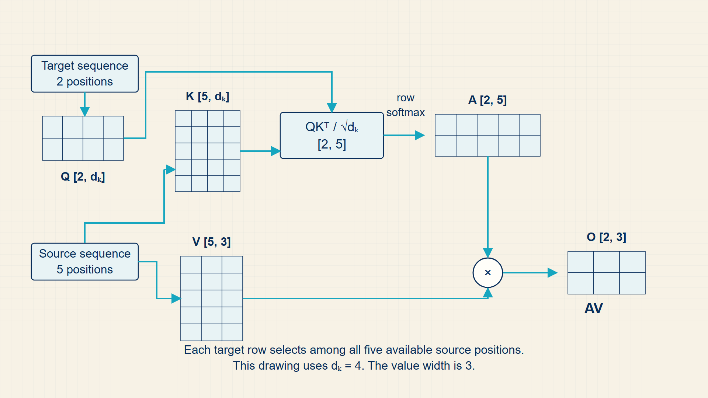
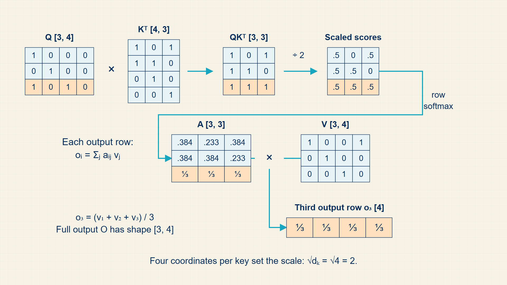
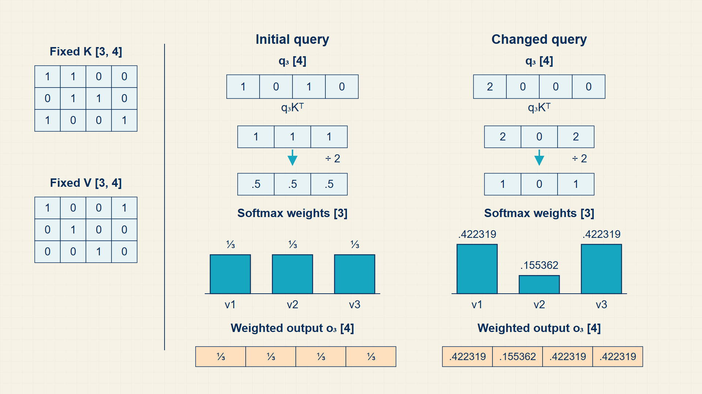

16 Attention mathematics
A position needs a defined set of readable vectors and normalized comparison weights before attention can combine their content.
A recurrent model passes information from an early position through every intervening state before a later prediction can use it. Attention gives a position direct access to a weighted combination of permitted sequence vectors. This shorter path trades repeated state transitions for comparisons between position pairs.
The calculation must specify which vectors determine compatibility, which vectors supply content, and which positions may be read. Its output is a new representation, not a selected next token.
16.1 Projected queries, keys, and values
A position may need information from several earlier tokens, with different contributions from each. Attention calculates coefficients for available vectors and combines them into an output. Learned projections let the comparison use different coordinates from the content being combined.
A query is the projected vector at the position whose output is being computed. A key is the projected vector at a position available to read. Their dot product supplies a compatibility score. A value is the content vector multiplied by the resulting coefficient.
For one sequence, let \(X\) have \(T\) position rows and representation width \(D\). The learned query projection \(W_Q\) forms
\[ Q=XW_{Q} \tag{16.1}\]
The learned key projection \(W_K\) forms
\[ K=XW_{K} \tag{16.2}\]
The learned value projection \(W_V\) forms
\[ V=XW_{V} \tag{16.3}\]
These matrices share their input width while allowing a different value width:
\[ W_{Q}\in\mathbb{R}^{D\times d_{k}},\quad W_{K}\in\mathbb{R}^{D\times d_{k}},\quad W_{V}\in\mathbb{R}^{D\times d_{v}} \tag{16.4}\]
Thus \(Q\) and \(K\) have shape \([T,d_k]\), while \(V\) has shape \([T,d_v]\). Here \(V\) denotes the value matrix, not vocabulary size. Each projection acts on a position’s whole width-\(D\) vector. The projection parameters remain fixed during inference. Their outputs change with the input representations.
The product \(QK^{\top}\) has one row per query and one column per key. Each entry is a dot product across \(d_k\) coordinates. Scaled dot-product attention divides these products by the square root of that width before normalization:
\[ \mathrm{scores}=\frac{QK^{\top}}{\sqrt{d_{k}}} \tag{16.5}\]
The scaling has a statistical motivation. Suppose query and key coordinates are independent, centered, and each has variance one. Each coordinate product then has variance one. If those products are also independent across coordinates, their sum has variance \(d_k\). Dividing by \(\sqrt{d_k}\) restores variance one.1
This controls typical score scale under those assumptions. Large score differences can concentrate softmax and make its local derivatives small. Learned coordinates need not remain independent or have unit variance, so scaling does not guarantee a particular distribution or bounded scores.
An attention weight is a normalized coefficient assigned to one value vector. Softmax across the key axis creates these coefficients. The resulting attention output is
\[ \operatorname{Attention}(Q,K,V)=\operatorname{softmax}(\mathrm{scores})V \tag{16.6}\]
Let \(A\) denote the attention matrix, with one weight row per query. The full notation also includes an additive visibility mask \(M^{\mathrm{attn}}\):
\[ A=\operatorname{softmax}\!\left(\frac{QK^{\top}}{\sqrt{d_{k}}}+M^{\mathrm{attn}}\right),\quad O=AV \tag{16.7}\]
Before softmax, \(M^{\mathrm{attn}}\) adds zero to permitted scores and negative infinity to blocked scores. Section 16.3 constructs it. With query length \(T_q\) and source length \(T_k\), \(A\) has shape \([T_q,T_k]\). Values have shape \([T_k,d_v]\), so \(O=AV\) has shape \([T_q,d_v]\). For softmax to produce defined weights, each query row needs at least one permitted finite score.
Example: One query compared with two keys
Use \(q=(1,0)\), \(k_1=(1,0)\), \(k_2=(0,2)\), and \(d_k=2\). Both positions are permitted. The dot products are \(q^{\top}k_1=1\) and \(q^{\top}k_2=0\).
Scaling gives scores \((1/\sqrt2,0)\approx(0.707107,0)\), displayed as \((0.707,0)\). The query has shape \([2]\), the key matrix \([2,2]\), and the score row \([2]\).
Conclusion: The two scores compare one query against two possible sources. They have not yet combined any content. Section 16.2 continues these exact scores through normalization and value mixing.
16.2 Normalized coefficients and value mixtures
The score row \((1/\sqrt2,0)\) favors the first key, but its entries do not sum to one. Row-wise softmax turns the scores into coefficients that can form a normalized mixture.
The attention matrix in §16.1 applies softmax across source positions separately for each query. Here \(Q,K,d_k,M^{\mathrm{attn}}\) retain their earlier meanings. Finite visible scores receive positive weights in exact arithmetic. Blocked scores receive zero, provided the row has a valid denominator. Floating-point underflow can round a positive weight to zero.
The same equation then multiplies the resulting matrix \(A\) by \(V\) to produce \(O=AV\).
For row \(i\), this is \(o_i=\sum_j A_{ij}v_j\). The coefficients are nonnegative and sum to one, so the output is a convex combination of the visible value vectors. The value width \(d_v\) can differ from \(d_k\). Attention weights do not identify output vocabulary classes.
Example: Continuing the two-key score row
Assign values \(v_1=(10,0)\) and \(v_2=(0,2)\). For the preceding scores, \(e^{1/\sqrt2}\approx2.028115\) and \(e^0=1\). Dividing by their sum gives weights approximately \((0.669762,0.330238)\).
The output is \(0.669762(10,0)+0.330238(0,2)\approx(6.697615,0.660477)\), using unrounded coefficients. The weight row has shape \([2]\), values \([2,2]\), and output \([2]\).
Conclusion: The first value receives roughly twice the coefficient of the second. Its coordinate magnitude of 10 also matters, so coefficients alone do not describe the size of each coordinate’s contribution.
Example: A separate, sharper score row
Reset the supplied scaled scores to \((2,0)\), retaining \(v_1=(10,0)\) and \(v_2=(0,2)\). Softmax gives approximately \((0.880797,0.119203)\), displayed as \((0.881,0.119)\).
The weighted output is approximately \((8.807971,0.238406)\). Using the displayed rounded coefficients gives the rounded calculation \((8.81,0.238)\).
Conclusion: The larger score gap puts more coefficient mass on the first value. This separate calculation does not replace the \((0.707,0)\) row’s output.
The runnable PyTorch example supplies three two-coordinate queries, keys, and values. All positions are visible, so this is deliberately unmasked attention. F.softmax(scores, dim=-1) normalizes over keys. The plotting libraries Matplotlib and Seaborn display the weight matrix as a heatmap.
Code example: Scaled dot-product attention and a token-to-token heatmap
import math
import torch
import torch.nn.functional as F
import matplotlib.pyplot as plt
import seaborn as sns
tokens = ["the", "cat", "sat"]
Q = torch.tensor([[1.0, 0.0], [0.0, 1.0], [1.0, 1.0]])
K = torch.tensor([[1.0, 0.0], [0.0, 1.0], [1.0, 1.0]])
V = torch.tensor([[2.0, 0.0], [0.0, 2.0], [1.0, 1.0]])
scores = Q @ K.T / math.sqrt(Q.shape[-1])
weights = F.softmax(scores, dim=-1)
context = weights @ V
print(weights.sum(dim=-1), context)
sns.heatmap(
weights.numpy(),
xticklabels=tokens,
yticklabels=tokens,
annot=True,
)
plt.xlabel("key position")
plt.ylabel("query position")
plt.tight_layout()The printed row sums are approximately [1,1,1]. The context rows are approximately [[1.203336,0.796664],[0.796664,1.203336],[1,1]]. They have shape \([3,2]\). These hand-selected arrays illustrate computation, not a trained linguistic relationship. This example uses PyTorch 2.12.0 on CPU, Matplotlib 3.11.2, and Seaborn 0.13.2. Its plotting calls create a figure object without saving an image file.
Heatmap rows label query positions and columns label key positions. Reading one row reveals the coefficients used for that output. A large coefficient does not prove a grammatical relationship or explain the final generated token by itself. Value magnitudes and later operations also contribute.
For a controlled input comparison, keep the projections fixed and change one position’s input vector. In one attention layer, its query row, key column, and value can change. Later layers can spread the effect to other positions. Saving scores, masks, weights, and outputs separates those numerical effects from a visual interpretation.
16.3 Causal visibility, padding, and empty rows
A training prediction must not read the next token supplied as its target. A padded position must also be excluded when it contains no source content. The attention calculation enforces both restrictions on scores before normalization.
Under §1.2’s alignment, input position \(i\) predicts \(x_{i+1}\). It may read itself and earlier inputs, while keys at \(j>i\) are blocked. The causal mask is
\[ M^{\mathrm{attn}}_{i,j}=\begin{cases}-\infty,&j>i,\\0,&\text{otherwise.}\end{cases} \tag{16.8}\]
Here \(i\) is the query index and \(j\) the key index. For four positions, its first row permits only key 1. Its second permits keys 1 and 2. The final row permits all four. The diagonal is allowed because \(x_i\) is input, while \(x_{i+1}\) is the target.
The padding-validity mask from §2.2 adds another condition. For a sequence padded to four positions with validity \((1,1,1,0)\), a valid query permits key \(j\) only when \(j\le i\) and key \(j\) is valid. For query 3, this gives mask row \((0,0,0,-\infty)\).
\[ \mathrm{scores}_{ij}=-\infty\quad\text{when position }j\text{ is not visible to position }i \tag{16.9}\]
For \(i=2,j=4\), the future key receives \(-\infty\). Exponentiation gives zero, so it contributes neither normalization mass nor value content. Remaining scores must be renormalized after exclusion. Keeping their old unmasked coefficients would generally leave a sum below one.
Key visibility does not determine whether a query is a real training position. A padded query can still produce an output by reading valid keys. The loss must separately exclude its nonexistent target, and later pooling must separately exclude its invalid output. Blocking every key for a padded query instead creates an empty row needing a declared handling policy.
Direct softmax of an all-\(-\infty\) row is undefined. Max subtraction gives \(-\infty-(-\infty)\), and the unshifted denominator is zero. A valid query needs at least one readable key. For invalid queries, software can skip them or apply a documented zero-output policy. A particular API’s special handling is not a probability distribution over an empty set.
Boolean masks are API-specific. torch.nn.functional.scaled_dot_product_attention interprets True as permitted. nn.MultiheadAttention interprets True as blocked.2 The masked_fill operation replaces entries where its Boolean mask is true, so a blocking mask suits masked_fill(mask, -inf). Section 17.8 gives the higher-level layer’s precise shapes.
Bidirectional attention allows positions on both sides of a query when the task permits them. Masked-token reconstruction can use such context, provided the target-construction procedure hides or alters selected inputs appropriately. Visibility follows the task and input arrangement, rather than a universal rule that all models use one triangle.
16.4 Self-attention and separate-source attention
A generated translation needs its earlier target tokens and the source sentence. Those are different sequences with potentially different lengths. Attention can retain the same normalization and value mixture while changing where its operands originate.
Self-attention derives queries, keys, and values from one representation sequence. With length \(T\), its score matrix is \(T\) by \(T\). Causal or bidirectional visibility then determines its permitted entries.
Cross-attention derives queries from the sequence being updated and keys and values from a separate source. Let \(X_q\) have shape \([T_q,D_q]\) and source \(X_s\) shape \([T_k,D_s]\). Query weights map \(D_q\) to \(d_k\), while source weights map \(D_s\) to \(d_k\) and \(d_v\).
Thus \(Q\) has shape \([T_q,d_k]\), \(K\) has shape \([T_k,d_k]\), and \(V\) has shape \([T_k,d_v]\). The score and weight shapes are \([T_q,T_k]\), and the result is \([T_q,d_v]\). Query and source lengths need not agree.
For two target queries and three source positions, choose query/key width four and value width five. The multiplication is \([2,4][4,3]\to[2,3]\), followed by \([2,3][3,5]\to[2,5]\). Each target position gets one width-five source mixture. Source padding must still be excluded.
An encoder-decoder can use causal self-attention within target positions and separate cross-attention over the complete encoded source. The source is supplied input, so reading it does not reveal an unavailable future target. Image patches or audio frames can likewise supply source vectors.

The diagram places projection, score scaling, masking, and softmax before output mixing. The final multiplication additionally needs the value branch, whose connection is implicit in the drawing. These operations are the same for self-attention and cross-attention. Their source axes differ.
16.5 Position-pair arithmetic and score storage
Direct access to every position creates a score for each query-key pair. For full self-attention at length \(T\), that is \(T^2\) scores per attention calculation. Long inputs therefore increase pair arithmetic quadratically even when the representation width stays fixed.
\[ \mathrm{work}_{\mathrm{attention}}=\mathcal{O}(T^{2}d_{k}),\quad \mathrm{memory}_{\mathrm{scores}}=\mathcal{O}(T^{2}) \tag{16.10}\]
The work term counts dot products of width \(d_k\) across \(T^2\) pairs. The memory term counts score entries if the complete matrix is materialized. Big-O describes growth with \(T\), as introduced in §15.5. Multiplication by values adds \(\mathcal O(T^2d_v)\) work. Cross-attention replaces \(T^2\) by \(T_qT_k\).
Increasing \(T\) from 1,000 to 2,000 changes the pair count from 1,000,000 to 4,000,000. At four bytes per stored score, those matrices use 4 MB and 16 MB of raw payload. These are decimal byte counts for one score matrix, excluding weights, activations, gradients, and allocator costs.
A causal triangle contains fewer permitted pairs, but storing a mask does not itself skip arithmetic. A dense implementation may still calculate the entire square. Kernels that exploit structure can perform different work.
FlashAttention is an attention algorithm that processes comparisons in blocks. It combines partial sums without retaining the full score matrix in accelerator main memory.3 For one query, the calculation tracks a running maximum score \(m\), an exponential sum \(\ell\), and a weighted-value sum \(u\).
Each processed score \(s_j\) contributes \(e^{s_j-m}\) to \(\ell\) and \(e^{s_j-m}v_j\) to \(u\). If a later block raises the maximum from \(m\) to \(m'\), both old sums are multiplied by \(e^{m-m'}\). New contributions then use the same maximum \(m'\). After all permitted keys, the output is \(u/\ell\). Separate blocks are not normalized independently.
For §16.2’s sharper-score example, process score 0 with value \((0,2)\) first. This gives \(m=0\), \(\ell=1\), and \(u=(0,2)\). Next process score 2 with value \((10,0)\). The new maximum is 2, so the old sums are scaled by \(e^{-2}\approx0.135335\).
The combined denominator is approximately \(1+0.135335=1.135335\). The combined numerator is approximately \((10,0.270671)\). Dividing gives \((8.807971,0.238406)\) using unrounded values, matching the full softmax mixture. Normalizing each single-key block first would give both vectors coefficient one and lose their relative scores.
Conclusion: Shared normalization combines contributions across blocks while permitting earlier score blocks to be discarded. Processing blocks changes storage and data movement without a sparse mathematical approximation. Floating-point operation order can still change the last digits.
Several learned attention heads are introduced in §17.2. Sharing their stored keys and values is a separate generation-state choice, compared in §21.1. Each query still requires its allowed scores to be calculated.
16.6 Three positions, visibility, and the resulting vectors
Equal query-key scores need not produce identical output coordinates when the value vectors differ. A small causal example separates the effect of the mask from the effect of those values.
The matrix illustration marks future-position exclusions but omits several operations. The equations and trace identify its query rows, key columns, and value multiplication explicitly.

The following image uses a separate unscaled demonstration. Its query \((1,0)\) gives raw scores \((2,1,0)\) and weights approximately \((0.665,0.245,0.090)\). Multiplying those weights by the image’s three value vectors gives the shown output, approximately \((1.42,0.58)\). With query width two, ordinary scaled attention would first divide its scores by \(\sqrt2\). The image’s arithmetic therefore illustrates softmax mixing without that scaling.

The following independent four-coordinate example uses §16.1’s masked scaled attention. It calculates each score, excludes blocked keys, normalizes the row, and multiplies by the value vectors.
One score entry and its corresponding output row are
\[ \operatorname{score}_{i,j}=\frac{q_i\cdot k_j}{\sqrt{d_k}} \tag{16.11}\]
\[ \operatorname{out}_i=\sum_j\alpha_{i,j}v_j \tag{16.12}\]
The query index is \(i\), source index \(j\), and \(\alpha_{i,j}\) is the normalized coefficient. Blocked keys have coefficient zero. The sum produces a vector of width \(d_v\).
Example: A causal three-token computation
Let the tokens be The, cat, and sat. Use keys \(k_1=(1,1,0,0)\), \(k_2=(0,1,1,0)\), and \(k_3=(1,0,0,1)\).
Values are \(v_1=(1,0,0,1)\), \(v_2=(0,1,0,0)\), and \(v_3=(0,0,1,0)\). Thus \(d_k=d_v=4\). Take queries \(q_1=(1,0,0,0)\), \(q_2=(0,1,0,0)\), and \(q_3=(1,0,1,0)\).
The raw score rows are \((1,0,1)\), \((1,1,0)\), and \((1,1,1)\). Dividing by \(\sqrt4=2\) gives \((0.5,0,0.5)\), \((0.5,0.5,0)\), and \((0.5,0.5,0.5)\).
Causal masking gives \((0.5,-\infty,-\infty)\), \((0.5,0.5,-\infty)\), and \((0.5,0.5,0.5)\). Their normalized rows are \((1,0,0)\), \((1/2,1/2,0)\), and \((1/3,1/3,1/3)\).
The first output is \(v_1=(1,0,0,1)\). The second is \((v_1+v_2)/2=(0.5,0.5,0,0.5)\). The third is \((v_1+v_2+v_3)/3=(1/3,1/3,1/3,1/3)\).
For the third row, the displayed exponential values are approximately \((1.649,1.649,1.649)\), summing to 4.947 after rounding. Exact equal scores give exactly equal coefficients. A fourth, future position would be blocked for this query regardless of its raw score.
Now change only \(q_3\) to \((2,0,0,0)\), holding keys, values, and visibility fixed. Its raw scores become \((2,0,2)\) and scaled scores \((1,0,1)\). The weights are approximately \((0.422319,0.155362,0.422319)\).
Its output becomes approximately \((0.422319,0.155362,0.422319,0.422319)\). This controlled query change differs from changing a token input, which could alter that position’s key and value too.
Conclusion: The first two rows exclude future values. The final row mixes all three, and changing its query changes the mixture without changing those values. Four output coordinates need not sum to one, even though the three coefficients do.
In a batched one-head implementation, \(Q,K,V\) have shapes \([B,T_q,d_k]\), \([B,T_k,d_k]\), and \([B,T_k,d_v]\). Scores have shape \([B,T_q,T_k]\) and outputs \([B,T_q,d_v]\). q @ k.transpose(-2,-1) forms pairs, scaling and masking precede softmax(dim=-1), and multiplication by v produces the output.
Attention now supplies one output vector per query by combining the permitted value vectors. Chapter 17 adds the paths and transformations needed to compose these outputs into a deeper model.
Chapter checkpoint
Does a key-padding mask automatically exclude padded query losses? Can max subtraction normalize a fully blocked row? Does avoiding full score storage remove quadratic pair arithmetic?
Answer: Each operation needs its own validity policy. Excluding keys does not exclude query targets from loss. An empty readable set has no probability distribution. Avoiding a materialized score matrix saves storage, but full attention still evaluates the required position-pair interactions.
Vaswani, A., et al. (2017). Attention is all you need. Advances in Neural Information Processing Systems, 30, §3.2.1. The variance argument assumes centered independent coordinates with unit variance.↩︎
PyTorch Contributors. (2026). Scaled dot-product attention and MultiheadAttention. PyTorch 2.12 documentation. Boolean conventions differ. The functional API defaults to
dropout_p=0.0. When a module calls it with a configured dropout rate, usedropout_p=(self.p if self.training else 0.0): calling.eval()does not itself change an explicitly supplied nonzero rate.↩︎Dao, T., Fu, D. Y., Ermon, S., Rudra, A., & Ré, C. (2022). FlashAttention: Fast and memory-efficient exact attention with IO-awareness. Advances in Neural Information Processing Systems, 35.↩︎